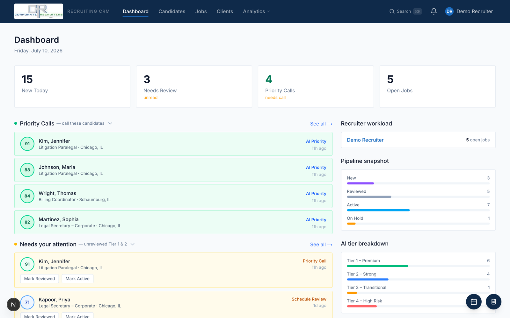
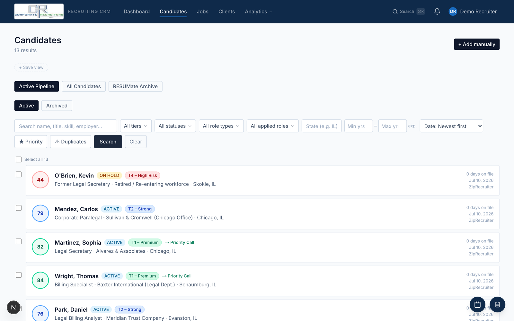
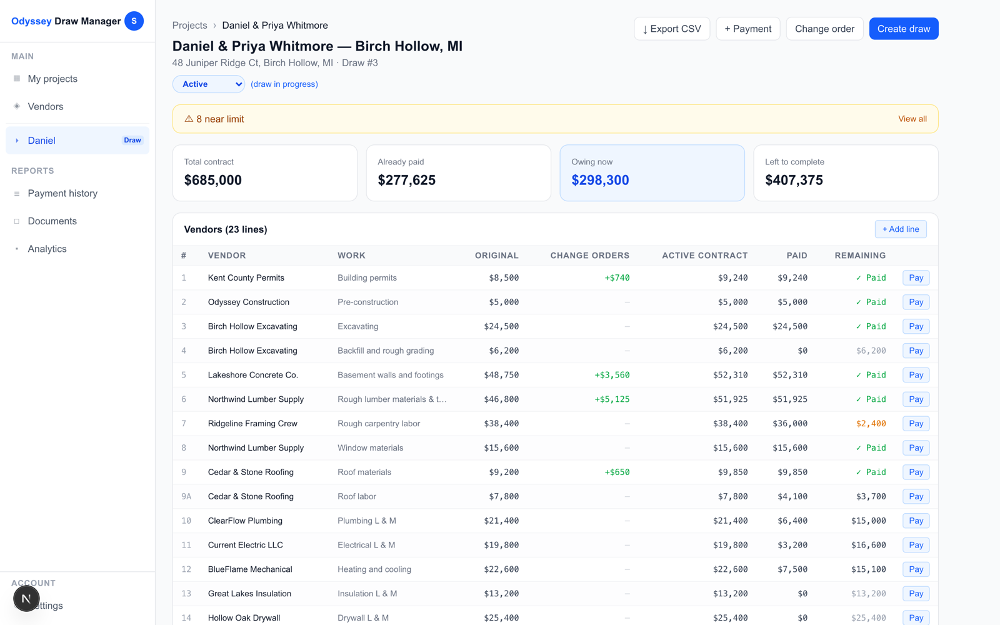
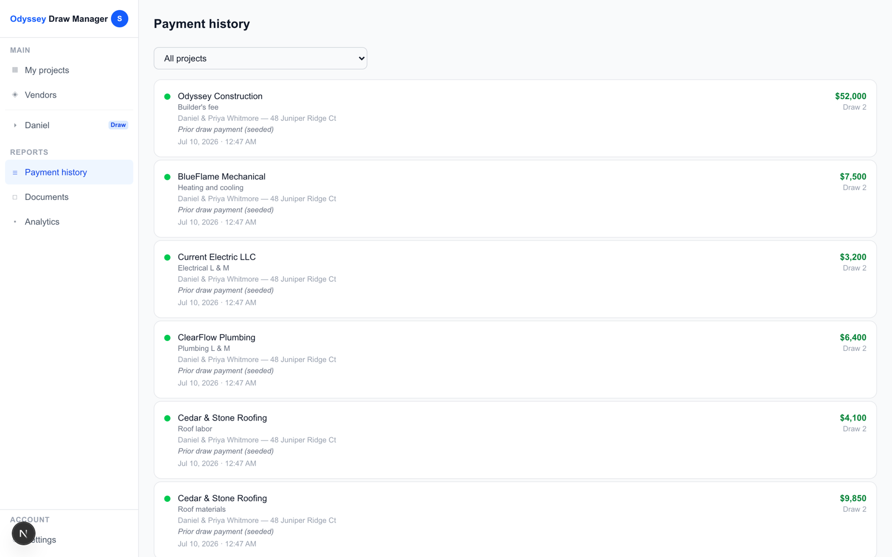
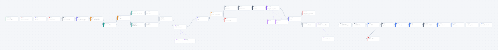
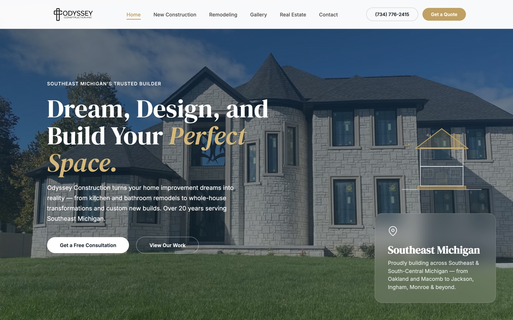

Portfolio
Sign in and work a recruiter's desk: AI-scored candidates, pipeline, jobs, placements.
demo@example.com / DemoPass123!
Open a $685k custom-home build: vendor budget lines, draws, change orders, payments.
Password demo2026
Both are the real client applications with all data replaced by fictional demo datasets — invented people, firms, addresses, and dollar amounts.
Software small businesses run on daily — built, shipped, and maintained end-to-end.


For a legal-staffing recruiting firm · in production
Replaced spreadsheets and a legacy ATS export with one system for the firm's whole desk: candidates, job orders, clients, submissions, and placement financials. New applicants arrive pre-scored by an AI intake pipeline, with recruiter review queues, tiering, and a full activity log. Includes the migration script that carried the firm's history over at cutover.


For a custom-home builder · in production
The financial spine of a home build: line-item budgets by vendor, bank draws, change orders with an approval trail, lien-waiver tracking, and bank-ready PDF paperwork. All money is integer cents — no floating-point currency math anywhere.

← The actual 44-node workflow, rendered from its JSON — scroll sideways to walk the pipeline →
Feeds the CRM · in daily client use
An n8n workflow that watches the firm's inbox and turns raw email attachments into scored CRM candidates: file-type gates, an LLM "is this even a resume?" classifier, o4-mini structured scoring, create-if-new dedup into the CRM's intake API, and Gmail-label bookkeeping that makes every run idempotent.

For a custom-home builder · live on the public web
The builder's public site at chooseodyssey.com — eight pages, real project photography, and search-first structure. Deliberately frameworkless: static HTML on Vercel's edge, fast and free to run forever.
Sales tooling · live, used for real outreach
Generates a fully branded proof-of-concept website per sales prospect — their logo, sampled brand colors, trade-matched content — served instantly on a wildcard preview domain from a JSON-driven site schema.
LLMs wired into real workflows — tools, pipelines, and agentic operations.
Personal project · feature-complete
A local-first finance app whose Claude-powered advisor doesn't just talk — it updates your accounts, budget, and goals directly from conversation via streaming tool use.
Case study · runs the agency daily
A git-based "shared brain" plus three named AI teammates — a silent project manager, a sales-desk manager, and a content manager — that keep a two-founder agency aligned, built on Claude Code with markdown as the database.
Live systems clients run their businesses on: Dockerized deploys, migrations, API contracts between systems, and AI pipelines with human review.
Schema design through UI polish — plus the unglamorous parts: deployment docs, entrypoint scripts, idempotent sync jobs, secrets hygiene.
The client apps are hosted with seeded demo data and credentials printed on the sign-in page. Click around; nothing to install.